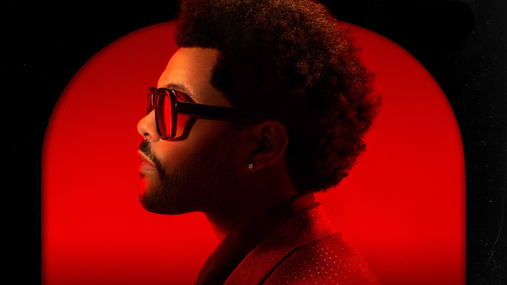

欢迎来到 My Music World！这里是一个分享音乐、歌手和音乐故事的平台。希望通过这个网站，能够让更多人感受到音乐的魅力，找到属于自己的音乐世界。
歌手 · 歌曲 · 音乐故事
华语流行音乐代表人物，中国风音乐开创者。
华语流行天后，声音极具辨识度。

加拿大R&B歌手。
周杰伦写这首歌是为了鼓励年轻人在困难时不要放弃...
这首歌的复古 synthwave 风格让它成为全球爆款...
一首充满思念与温情的歌曲，记录青春岁月...
《青花瓷》展现了中国古典文化的独特魅力，歌词如诗如画，旋律悠扬动人。